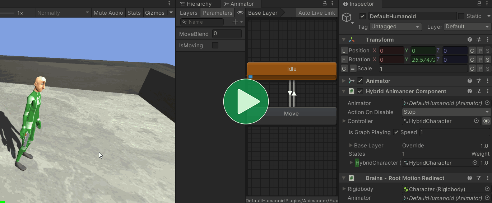
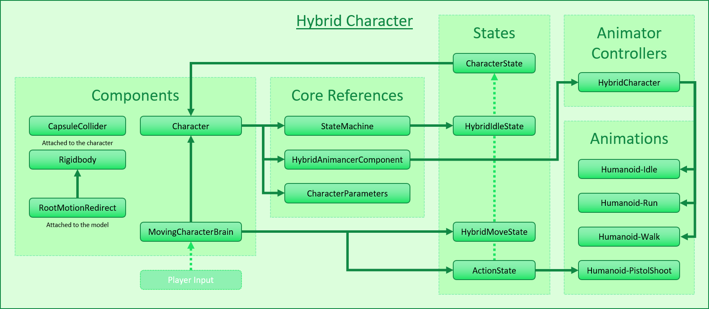
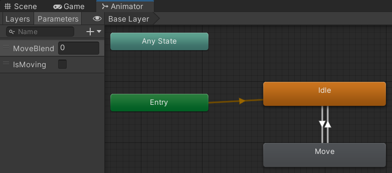
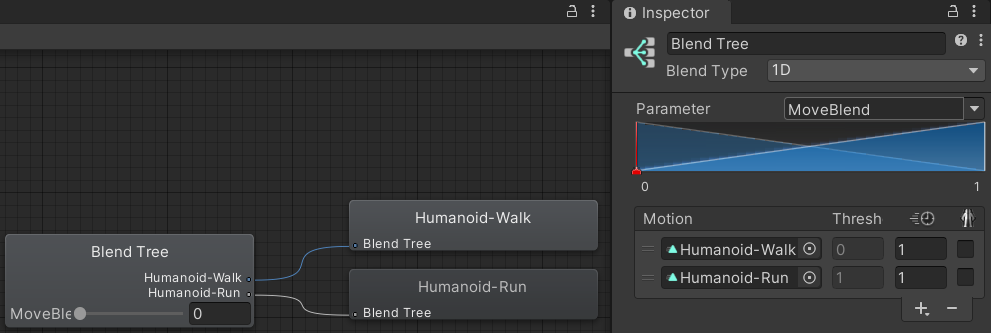
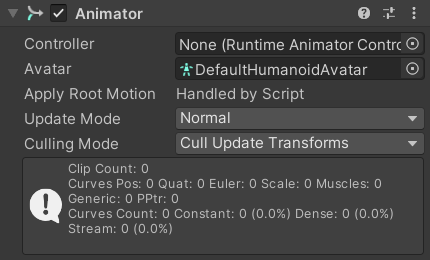
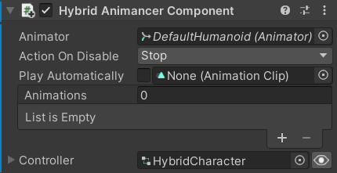
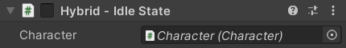
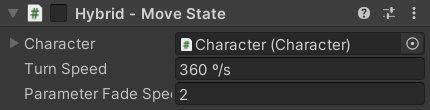
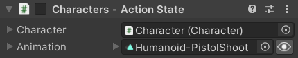

Location: Assets/Plugins/Animancer/Examples/09 Animator Controllers/02 Hybrid Character
Recommended After: Hybrid Basics and Brains
Learning Outcomes: in this example you will learn:
How to use a
HybridAnimancerComponent.How play define some animations inside an Animator Controller and others outside it.
This example is a variation of the Brains example which demonstrates how you can use a HybridAnimancerComponent to play an Animator Controller for some things and individual separate AnimationClips for others:
- Idle, Walk, and Run are defined inside the Animator Controller.
- Action is played separately, using the same
ActionStatescript from the Brains example.
Animator Controllers are a Pro-Only Feature. You can try them out in the Unity Editor with Animancer Lite, but they're not available in runtime builds unless you purchase Animancer Pro.

Summary
- A
HybridAnimancerComponenthas all the methods likePlayandSetFloatwhich would normally be used to control anAnimatorcomponent. - This example is more complex than the Brains example due to the use of Animator Controllers and doesn't really gain any advantages in exchange. Using Animator Controllers is generally only recommended if you already have one or are working with another system that requires one.
- Pre-calculating the hashes for state and parameter names in an Animator Controller can slightly improve performance compared to using their names everywhere.
- Weaver has a system for procedurally generating a script containing those values so you don't have to write them manually. It's included in Weaver Lite for FREE.
Overview
The general code structure is very similar to the Brains example, except that it uses a HybridAnimancerComponent to play an Animator Controller containing the Idle, Walk, and Run animations instead of referencing those animations directly from the states that will play them.

Click here to show the code structure from the Brains example:

If the character had a Generic Rig, the same result could have been achieved using a Native Animator Controller assigned to the Animator component. But since the character is Humanoid, that wouldn't allow blending between the Animator Controller and separate animations so this example needs to use a HybridAnimancerComponent instead.
Animator Controller
The Brains example used a ClipTransition for its Idle animation and a LinearMixerTransition for its Walk and Run animations.
public sealed class IdleState : CharacterState
{
[SerializeField] private ClipTransition _Animation;
}
public sealed class MoveState : CharacterState
{
[SerializeField] private LinearMixerTransition _Animation;
}
This example replicates that inside its Animator Controller with one regular state and one Blend Tree connected by transitions based on an IsMoving parameter:

The Blend Tree has the same animations as the Mixer:
- Walk at Threshold 0.
- Run at Threshold 1.
| Linear Mixer (Brains example) | Blend Tree (this example) |
|---|---|
 |
 |
When using a HybridAnimancerComponent, it references the Animator Controller instead of the Animator:
| Animator | Hybrid Animancer Component |
|---|---|
 TheController field here is blank. |
 The Animator Controller is assigned to thisController field instead. |
Animation Constants
Optimization
You can reference states and parameters inside an Animator Controller using strings like so:
animator.Play("State Name");
Internally, that method calls Animator.StringToHash to get the int ID of the state with that name (if there is one). That method has a small performance cost which can be avoide if you simply call it once and store the result in a static field and use it instead:
// In a class (outside any method):
public static readonly int StateName = Animator.StringToHash("State Name");
// In a method:
animator.Play(StateName);
It works exactly the same for parameter names.
Central Class
In this example, the IsMoving parameter will be set to false by HybridIdleState and true by HybridMoveState.
- You could give both states their own copy of the ID field, but then you have two places where you might make spelling mistakes and where you need to update the code if you rename the parameter in the Animator Controller.
- You could store the
IsMovingID inHybridIdleStateand haveHybridMoveStateaccess it viaHybridIdleState.IsMoving, but in a complex system with lots of states it would be annoying if you had to search around to find a particular ID. - This example avoids those issues by making a central class for all animation IDs like so:
public static class Animations
{
public static readonly int IsMoving = Animator.StringToHash("IsMoving");
public static readonly int MoveBlend = Animator.StringToHash("MoveBlend");
}
// In HybridIdleState.OnEnable:
HybridAnimancer.SetBool(Animations.IsMoving, false);
// In HybridMoveState.OnEnable:
HybridAnimancer.SetBool(Animations.IsMoving, true);
Weaver
Manually writing and maintaining the Animations class can be tedious and offers many opportunities for spelling mistakes, so Weaver has a system for procedurally generating that script which also includes a HashToString method for converting a hash value back to the string it came from. That system is included in Weaver Lite for FREE, though Weaver Pro can also generate extension methods to get and set each parameter so your scripts don't need to manually call the correct SetFloat, SetBool, etc. methods corresponding to the parameter's ID.
Idle State
The HybridIdleState in this example is very similar to the IdleState from the Characters example.

Normally, you would give Character class a reference to the specific type of AnimancerComponent you want like so:
public sealed class Character : MonoBehaviour
{
[SerializeField]
private HybridAnimancerComponent _Animancer;
public HybridAnimancerComponent Animancer => _Animancer;
But this example is reusing the Character class from the Characters example which only references a base AnimancerComponent. We could duplicate that script to make this change, but for the sake of avoiding unnecessary scripts it's simpler for the new states in this example to just Type Cast the existing reference:
public sealed class HybridIdleState : CharacterState
{
private HybridAnimancerComponent HybridAnimancer
=> (HybridAnimancerComponent)Character.Animancer;
Then the OnEnable method can simply tell it to play its Animator Controller (in case the previous animation was outside it) and set the IsMoving parameter inside it:
private void OnEnable()
{
HybridAnimancer.PlayController();
HybridAnimancer.SetBool(Animations.IsMoving, false);
}
}
Move State
The HybridMoveState in this example is very similar to the MoveState from the Brains example.

It has the same property to Type Cast the AnimancerComponent as the HybridIdleState:
public sealed class HybridMoveState : CharacterState
{
private HybridAnimancerComponent HybridAnimancer
=> (HybridAnimancerComponent)Character.Animancer;
It plays the Animator Controller and sets its IsMoving parameter just like the HybridIdleState (except that it's true this time):
private void OnEnable()
{
HybridAnimancer.PlayController();
HybridAnimancer.SetBool(Animations.IsMoving, true);
...
}
Where the MoveState could simply get and set the Mixer's Parameter, getting a parameter value from an Animator Controller has a slightly larger performance cost so instead this script just stores its own copy of the value so it only needs to set the value in the Animator Controller (but not get it):
[SerializeField] private float _ParameterFadeSpeed = 2;
private float _MoveBlend;
private void OnEnable()
{
...
_MoveBlend = Character.Parameters.WantsToRun ? 1 : 0;
}
private void UpdateAnimation()
{
var target = Character.Parameters.WantsToRun ? 1 : 0;
_MoveBlend = Mathf.MoveTowards(
_MoveBlend,
target,
_ParameterFadeSpeed * Time.deltaTime);
HybridAnimancer.SetFloat(Animations.MoveBlend, _MoveBlend);
}
The rest is identical to the MoveState from the Brains example.
[SerializeField, DegreesPerSecond] private float _TurnSpeed = 360;
private void Update()
{
UpdateAnimation();
UpdateTurning();
}
private void UpdateTurning()
{
var movement = Character.Parameters.MovementDirection;
if (movement == default)
return;
var targetAngle = Mathf.Atan2(movement.x, movement.z) * Mathf.Rad2Deg;
var turnDelta = _TurnSpeed * Time.deltaTime;
var transform = Character.Animancer.transform;
var eulerAngles = transform.eulerAngles;
eulerAngles.y = Mathf.MoveTowardsAngle(eulerAngles.y, targetAngle, turnDelta);
transform.eulerAngles = eulerAngles;
}
}
Action State
The character also has an ActionState which is set up exactly the same as it was in the Characters example:

Conclusion
If you watch the Animator window and the AnimancerComponent in the Inspector during Play Mode, you can see the Idle, Walk, and Run animations being played inside the Animator Controller while the Action animation is played separately by Animancer:
This example demonstrates how things can be done, but in most cases that's not how they should be done. Getting away from Animator Controllers was the main reason Animancer was created in the first place and this example adds more complexity to the Brains example without any real practical benefit. But while it isn't recommended to use Animator Controllers when building a new system from the ground up, it can be useful if you already have them set up in an existing project or when working with another system that uses them (such as a character controller framework).
What Next?
| Example | Topic |
|---|---|
| 3D Game Kit | Converting the logic from Unity's 3D Game Kit Lite to use Animancer instead. Basically the opposite of this example and with a much more complex character. |